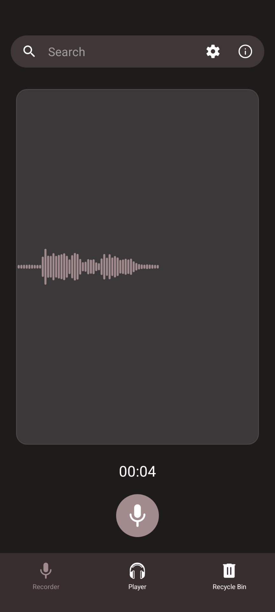
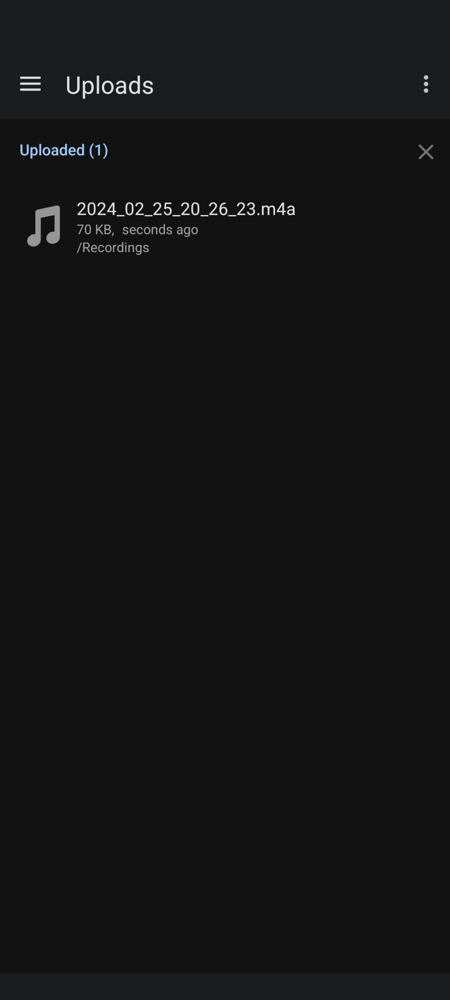
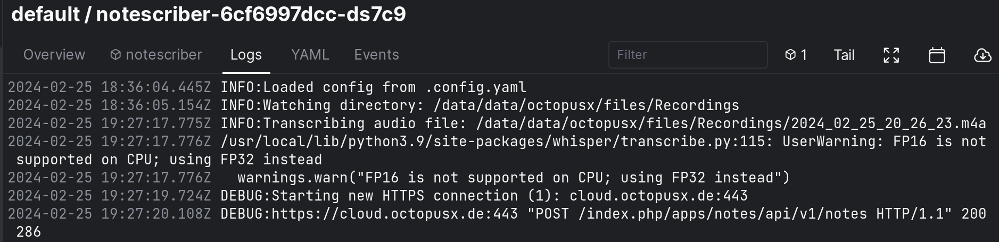
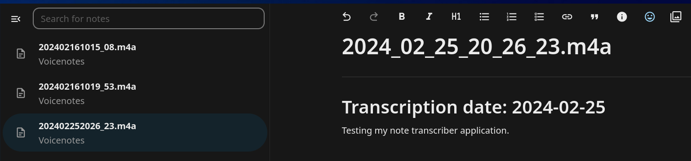

8 minutes
Plugin Unplugged - A voice note plugin for Nextcloud
Hello, finally we meet again! After a frantic end of the last year it was time for a short break, which is now over. I am ready to write some more and get you reading again. Maybe even inspire you to do something like this yourself, who knows?
I am a casual programmer that enjoys the art, though not so much in a professional manner. Yaml engineers the call us, or terraformers. Administering the cloud rarely demands access to my programming skill set, though when it does call for it I always prefer it to be sharp. And so I sharpen it here, on these pages and over on my trusty teapot.octopusx.de.
This new idea for a small project sparked in my mind after a discussion with a friend about migrating away from the dreadful and (somehow) still alive Evernote and over to a more open platform. They asked me if Nextcloud notes supports voice notes, like Evernote does. Well, it does not have that feature, I said to them. But… why should it not? I decided to see what it would take to make this a possibility, and though the resulting plugin is not strictly comparable to the functionality in Evernote, I think you may still find it a fascinating plugin, perhaps even useful! Let’s dive in and set out some rules…
What is it we’re actually trying to do here…
So, there is no built-in flow to simply record a voice file and treat it as a note, with the ability to tag or add metadata. In case of Evernote, you can create a voice memo, then include it in a note, akin to an email attachment. This way you can tag it and add any content to said note that you could potentially use in order to find the voice note again in the future. This though gave me an idea. What would be even better than extra tags and text added to such a voice note manually? Why, the contents of the voice note itself, in form of text!
My goal was therefore as follows:
- Have the ability to easily record, then seamlessly upload the recorded voice memos into Nextcloud
- Have the notes transcribed automatically in the background as they are uploaded
- The final transcriptions should take shape of a Nextcloud note, with any tags and metadata generated and attached automatically, to make searching for it and its content easy using Nextcloud’s unified search feature
- Ideally have the note either spell out the name of, or include an actual link to the voice file itself, making it possible to find the original recording and listen to it by essentially searching its content via the proxy of its transcribed note
Step one, let’s record something
Since the Android Nextcloud application has the ability to watch a certain directory on the phone, then apply rules to said folder about when and where to upload its contents, I thought this should be easily leveraged to watch for voice recordings generated by another app. After a short search on F-droid I have found a simple and perfectly functional application that I could use to record voice notes. The Simple Voice Recorder.

As a bonus, the default file naming scheme for the voice notes allows for easily identifying and ordering voice notes to be ingested by the transcription application, more on that later…

Step two, find out what’s new
So, the voice note creation and uploading is sorted simply. The next step to design is to somehow detect that a new voice note was uploaded and trigger a transcription of it. At first I thought I can actually use the (relatively) new App API released last year by Nextcloud. This new API allows for coding and integrating new Nextcloud apps/extensions in most any programming language, which is great for me as I am not proficient in PHP.
Sadly, after a short bit of research, it turns out that in order to deploy such app one must dedicate an entire virtual machine as a deployment target, then give Nextcloud access to the docker socket on that host. In short, to use such an app I would have to spawn another “cluster” alongside an already complex Kubernetes cluster that I host and manage. This would mean that, if I wanted the same level of resiliency, scalability and security for this VM and the Nextcloud apps running on it, I would need to duplicate a lot of work that one normally doesn’t need to duplicate when running everything in Kubernetes. Even worse, I have a suspicion that a lot of other developers feel similarly to myself, as the “External App Store” is barren, with only a couple small project hosted there alongside the 4 examples that were presented at the conference last year. Truly disappointing.
So, from one janky solution straight into another! The fastest way to see if new files got added to a folder is just to check the filesystem, right? Thankfully I am already using an NFS share for the file storage as I am running multiple instances of Nextcloud in my cluster and this is how I provide the file access to multiple containers. Sharing the NFS volume with another container was therefore not a big deal at all.
My first stab was using inotify and looking for filesystem changes to a specific directory mounted from the Nextcloud volume. I called the directory Recordings, and it is where all of my voice notes land when my Android phone uploads them. then run whisper on any new audio file and use the Nextcloud notes API to post new notes. This worked locally, but had exhibited odd behaviour when I deployed it to my Kubernetes cluster. It turns out that NFS mounted file systems do not generate inotify callbacks when files change on them, as that is a low level system call that is only triggered on the actual hardware the original filesystem resides on.
If at first you fail, try, try again. So I decided to instead use the file names of the voice notes as a guide, as they are independent of file system mechanisms and include the date and time of each recording (as I mentioned earlier). In the first iteration I generate a timedate object based on current time and ingest files with timestamps newer than that one, then move the timedate object to a new timestamp after ingestion. This seems to work ok from my limited testing, though long term I will for sure implement some sort of time sync method, in order to preserve the last ingested time stamp before container restarts.

Step three, write it down
Now, that we have a way to find audio files to transcribe, we can feed them into the openai-whisper library. And wow, is this one easy to use and… just working? Much simpler to work with and lighter to run than I expected.
The documentation gives us this quick start example:
import whisper
model = whisper.load_model("base")
result = model.transcribe("audio.mp3")
print(result["text"])
And that is basically all there is to it. The only prerequisite is that we have ffmpeg installed and available on the system.
The first time you load up the library it will look for the model you’re trying to use locally, then proceed to download it if it is not already present. Fun hack, in order to prevent my final deployment to keep re-downloading the same model over and over again on each restart, I added this script:
#!/usr/bin/env python
import whisper
model = whisper.load_model("base")
to a step in my dockerfile, so that it always comes preloaded with the basic model.
I wish there was more to write here, but it is really this straight forward…
Step four, save it for later
As I already alluded to in step two, I didn’t end up using the external app API to integrate this app with Nextcloud. There are however many options available to us, and the simplest one I found was to use the Nextcloud Notes API. This simple wrapper gives us all of the functionality we need, with nothing we don’t, just take a look at this example block:
from nextcloud_notes_api import NotesApi, Note
api = NotesApi('username', 'password', 'example.org')
note = Note('Shopping List', 'Spam', favorite=True)
api.create_note(note)
I was really expecring this project to take longer to cobble together, but there are just so many community projects and libraries covering the functionality we need, it was positively trivial.

In summary
We made it! This is about it basically. We read the file system for new files with matching filename patterns, feed the audio files through whisper then post the transcriptions as notes. And boom! We can now use the search feature of Nextcloud to find our voice notes.
What we have so far however isn’t perfect. There is a number of improvements I am planning to make to this little app in order to make it actually useful to other people. In the near future I hope to:
- Allow for more flexible configuration, the ability to choose the source folder and the pattern/metadata of the resulting notes
- Move away from scanning for files on the NFS volume into either making some form of an API call to Nextcloud, or using webdav to query the directory state
- Cache the timestamp of the last note transcribed, in order to perform graceful resumes on Notescriber restarts
Notescriber, currently at version 0.0.5, is available publicly over on my Teapot instance, so feel free to try it out, or even reach out to me if you’d like to contribute. And with that call to action, I wish you all many well transcribed audio notes and a wonderful start into the new year!
1618 Words
2024-02-24 21:22